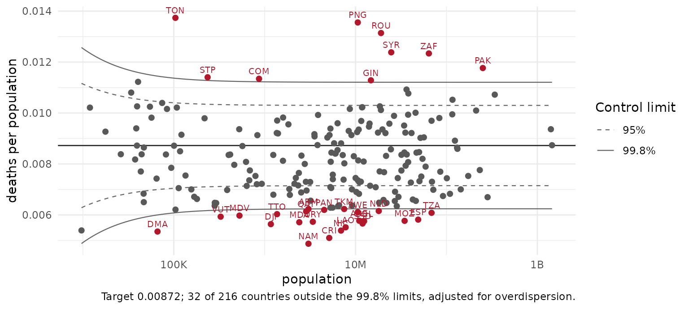

Rates and small numbers
Source:vignettes/articles/rates-and-small-numbers.Rmd
rates-and-small-numbers.RmdA rate over eleven thousand people shouts as loudly as one over a
billion. Four verbs handle that: rate_check() flags it,
smooth_rates() shrinks it, rate_funnel() shows
it, value_by_alpha_map() maps it.
head(rate_check(d, deaths, population))
#> # A tibble: 6 × 6
#> iso3c numerator denominator rate expected_se flagged
#> <chr> <int> <dbl> <dbl> <dbl> <lgl>
#> 1 NRU 122 11947 0.0102 0.000925 TRUE
#> 2 TUV 52 9646 0.00539 0.000748 TRUE
#> 3 PLW 164 17695 0.00927 0.000724 TRUE
#> 4 MAF 219 26129 0.00838 0.000566 TRUE
#> 5 SMR 367 33977 0.0108 0.000564 TRUE
#> 6 LIE 454 40450 0.0112 0.000527 TRUEEmpirical-Bayes smoothing pulls an unreliable rate toward the global
rate, or with method = "local_eb" toward its
neighbourhood’s:
s <- smooth_rates(d, deaths, population, method = "local_eb")
head(s[order(s$population), c("iso3c", "deaths_rate", "deaths_smoothed",
"deaths_shrinkage")])
#> # A tibble: 6 × 4
#> iso3c deaths_rate deaths_smoothed deaths_shrinkage
#> <chr> <dbl> <dbl> <dbl>
#> 1 TUV 0.00539 0.00637 0.568
#> 2 NRU 0.0102 0.00831 0.423
#> 3 PLW 0.00927 0.00962 0.637
#> 4 MAF 0.00838 0.00850 0.671
#> 5 SMR 0.0108 0.00945 0.519
#> 6 MHL 0.00818 0.00764 0.423The funnel plot puts every country against the limits chance alone would give a country its size, with Spiegelhalter’s overdispersion adjustment:
rate_funnel(d, deaths, population, overdispersion = TRUE)